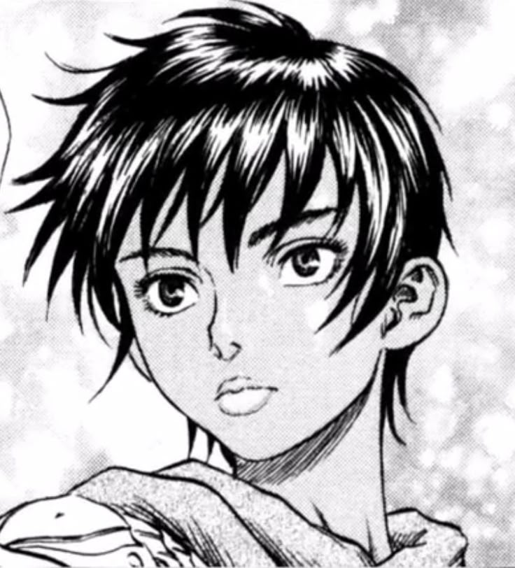

Je zkušený válečník a bojuje obrovským mečem.
Je známý svou silou, odhodláním a těžkým životním osudem.
Band of the Hawk.
Je velmi ambiciózní a jeho největším snem je mít vlastní království.
Band of the Hawk.
Je odvážná, schopná a má důležitý vztah ke Gutsovi i Griffithovi.